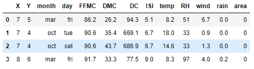
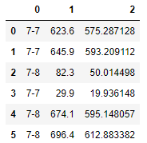

Index 2
Jarak data¶
Tarik sampel data dan beri label
import pandas as pd import itertools df=pd.read_csv("forestfires.csv", nrows=4) df

Minkowski Distance¶
Jarak Minkowski adalah jarak spatial dengan M sebagai parameter real dan N sebagai jumlah dimensi pada entity.
Special Case: + Jika M = 1 maka bisa disebut sbg Manhattan (Cityblock) distance + Jika M = 2 maka bisa disebut Euclidean distance.
data2 = [( "{}-{}".format(a[0],b[0]), spad.cityblock(a[4:],b[4:]), spad.euclidean(a[4:],b[4:])) for a, b in itertools.combinations(df.values.tolist(), 2)] pd.DataFrame(data2)
